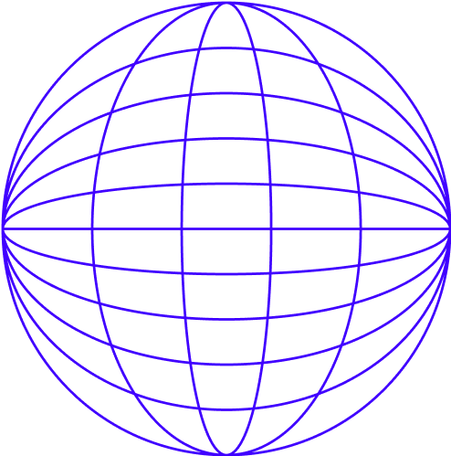

CS 5대 과목 핵심 정리
이벤트 루프, 클로저, 프로토타입 등
생명 주기, 상태 관리, 최적화 등
렌더링 전략, 인프라, 테스팅 등
동작 원리, 기초 문법 등
접근성, 반응형, 최적화 등
회사와 나를 알아보는 질문
문제로 익혀보는 CS 5대 과목
여러분의 참여로 더 좋은 내용을 채워갈 수 있어요.새로운 질문 추가, 오타 수정, 답변 개선 등 모든 기여 환영합니다!